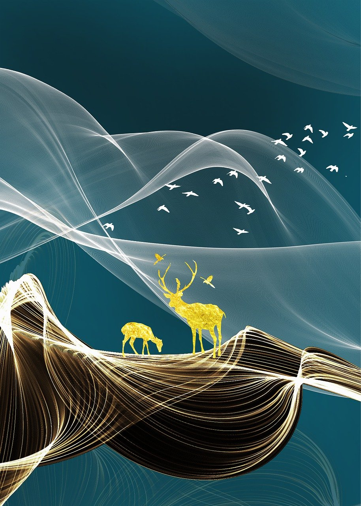
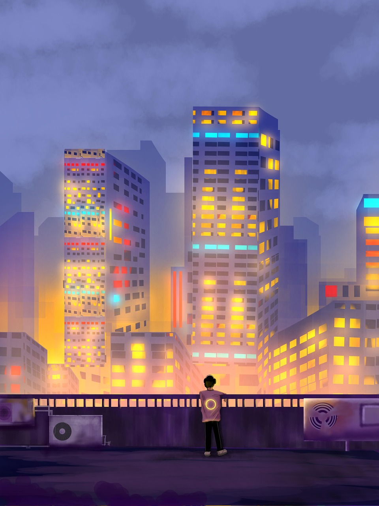

Art in the Modern Age
Digital art uses technology to create images, videos, and animations. Artists use computers, tablets, or phones to design posters, illustrations, and 3D models. Popular digital art fields include graphic design, video game design, and photo editing. Many artists share their work online, reaching global audiences instantly. Technology has changed how we make and enjoy art, allowing endless creativity through pixels and code. Anyone can be a digital artist by experimenting with apps and tools available today.

